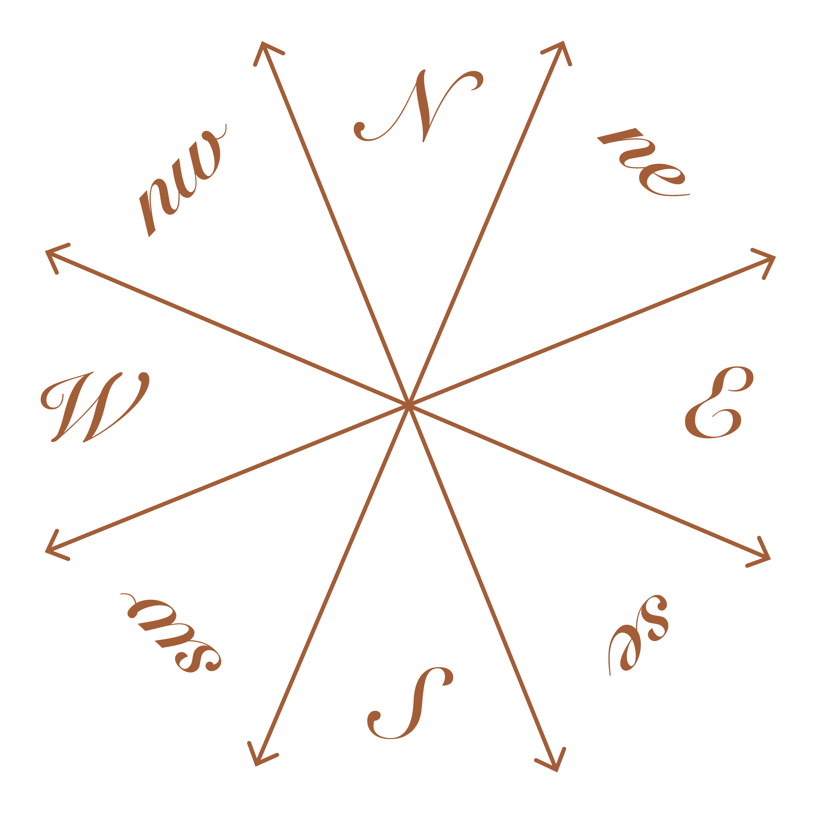
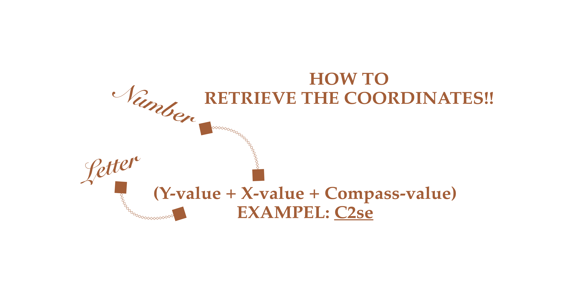

*Seeking something special?
you will need a map to find your coordinates
Curious and Confused? Uneasy and Uncertain? Excited and Exhausted?
In the world of design you travel through a lot of emotions in hope of finding
a path in which you can thrive. Competition, self-doubt and pre-
carious living may follow you along and
make it all seem like an uphill ride. But in this guide collection, hopefully you'll find some answers to help your quest.
You never know, perhaps you will be blessed. However, beware cause answers are not all to be believed.
So always keep your mind reflective, critical and you can't be deceived.